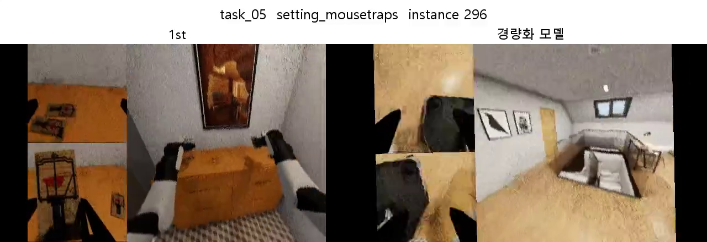
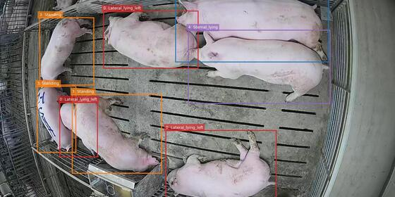

고려대학교 Computer Vision Lab
2026.08 - 현재3D Reconstruction, Diffusion Models, 워터마크 제거 관련 논문을 리뷰하고 발표합니다. 각 방법의 핵심 아이디어와 실험 결과를 정리하고, 관련 실험 수행을 보조합니다.
서울과학기술대학교 기계자동차공학과 학부생으로, 현재 고려대학교 Computer Vision Lab에서 김상필 교수님의 지도 아래 연구 인턴으로 활동하고 있습니다.
주요 관심 분야는 자율주행과 Vision-Language-Action(VLA)입니다. 현재 관측뿐 아니라 과거의 움직임과 상호작용을 기억하여, 주변 상황을 이해하고 예측과 행동으로 연결하는 지능을 연구하고 싶습니다.
BEHAVIOR-1K 프로젝트를 통해 시각·언어 정보와 행동 정책을 연결하는 VLA 구조를 학습했고, 최근 VGGT 등 3D Reconstruction 방법을 공부하며 공간 정보를 활용한 메모리 구조에 관심을 넓혔습니다.
구체적으로는 최근 관측에서 얻은 주변 환경과 객체의 공간 정보를 3D 표현의 단기기억으로 유지하고, 시간이 지난 핵심 사건·이동 이력·객체 간 상호작용은 간결한 텍스트 등의 장기기억으로 요약해 저장하는 방식을 연구하고자 합니다. 현재 상황에 필요한 기억을 검색하여 주변 객체의 의도와 미래 궤적을 예측하고, VLA 기반 자율주행 의사결정에 활용하는 것이 목표입니다.
고려대학교 Computer Vision Lab에서 연구 인턴을 시작했습니다.
3D Reconstruction, Diffusion Models, 워터마크 제거 관련 논문을 리뷰하고 발표합니다. 각 방법의 핵심 아이디어와 실험 결과를 정리하고, 관련 실험 수행을 보조합니다.
PyTorch 기반 딥러닝 모델 구현, 데이터 전처리와 학습·검증 데이터셋 구성을 경험했습니다. PyTorch Lightning 학습 구조를 실습하고, 학습률·배치 크기를 조정하며 모델별 성능을 비교했습니다.


제공된 Bounding Box에서 돼지 영역을 추출하고 다섯 가지 자세를 분류했습니다. 팀에서는 YOLO, EfficientNetV2, ConvNeXt와 전처리·학습·추론 전략을 비교했습니다.
담당 역할. 이미지·Bounding Box 기반 데이터셋 구성, YOLO 모델 학습·추론, 전처리 실험 및 오분류 분석.
보고서 내 YOLO 실험은 Public LB F1 0.723 → 0.916을 기록했습니다. 팀 전체 최고 점수는 EfficientNetV2의 0.956입니다.
트윗이 실제 재난을 설명하는지 판별하는 이진 분류 프로젝트입니다. 팀에서는 LSTM / GRU, Transformer, Logistic Regression을 비교했습니다.
담당 역할. URL·멘션·특수문자 정제, TF-IDF 기반 Logistic Regression 학습, 프랑스어 역번역 데이터 증강 및 오분류 분석.
보고서 기준 Logistic Regression의 Accuracy 0.78 · Macro F1 0.77. 재난 클래스의 낮은 재현율을 분석하고 개선 방향을 정리했습니다.
전체 평점 3.68 / 4.5 · 전공 평점 3.83 / 4.5